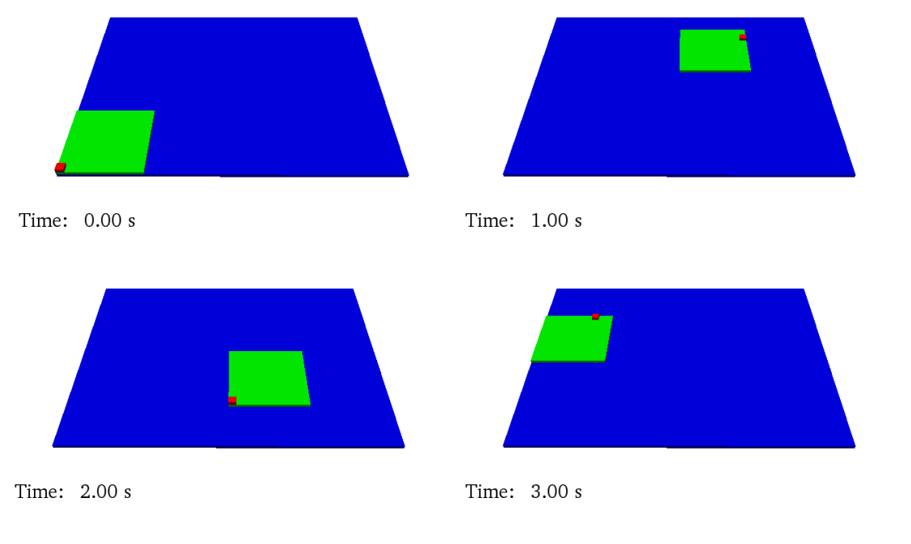
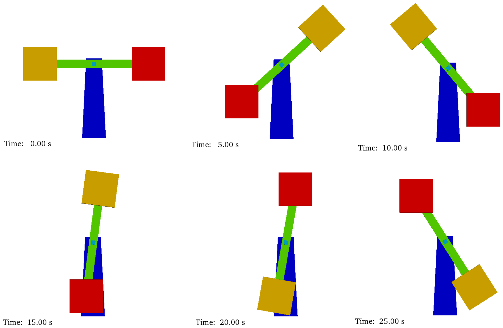

Floating Bodies and Prescribed Motion¶
Under review by José Domínguez and Alex Crespo
Floating bodies and material properties¶
A casedef/floatings/floating entry identifies a rigid floating body by mkbound. Its density or total mass must be consistent with the intended object. GenCase v6 accepts relativeweight as well as the rhopbody attribute and massbody child illustrated below. relativeweight is a dimensionless relative-weight factor referenced to the fluid reference density, not a mass in kilograms. Select a consistent body specification; these input forms must not be treated as automatically interchangeable or supplied as conflicting mass and density definitions.
GenCase can calculate the centre of gravity and inertia, or the user can specify them. inertia supplies diagonal terms; inertiafull supplies the full matrix. The source defines inertia about axes parallel to the reference coordinate system and through the body's centre. Initial translational velocity uses m/s and initial angular velocity rad/s.
<floating mkbound="5" property="Material_2">
<massbody value="1.3"/>
<inertiafull>
<values v11="11" v12="0" v13="0"/>
<values v21="0" v22="22" v23="0"/>
<values v31="0" v32="0" v33="33"/>
</inertiafull>
</floating>
<floating mkbound="7" rhopbody="1500">
<linearvelini x="1" y="3" z="2" units_comment="m/s"/>
<angularvelini x="0.2" y="0.4" z="0.6" units_comment="rad/s"/>
</floating>
translationDOF controls surge, sway and heave along X, Y and Z; rotationDOF controls roll, pitch and yaw about them. Zero restricts the selected degree of freedom and one permits it. Do not confuse these constraints with a prescribed motion history or assume they define an arbitrary mechanical joint.
<floating mkbound="6" rhopbody="1500">
<translationDOF x="0" y="0" z="1" comment="Use 0 to restrict Degrees Of Freedon for translation (default=(1,1,1))"/>
<rotationDOF x="0" y="1" z="0" comment="Use 0 to restrict Degrees Of Freedon for rotation (default=(1,1,1))"/>
</floating>
Prescribed boundary motion¶
Motion is defined under casedef/motion. An objreal ref="..." associates a movement with its boundary object. begin mov="..." start="..." selects an initial movement and starting time, with finish where used. Movement id values and next links form a sequence; repeated begin entries can combine movements. Nested objects introduce a motion hierarchy, so a child's trajectory includes the parent's motion as well as its own.
An abstract obj can group several objreal references under a shared movement. In the source rotational example, references 1, 3 and 4 share the mvrotace defined in their enclosing obj; reference 5 has a separate mvcirace. The shared group and a child object with its own additional movement are distinct uses of the hierarchy.
For mvrect, a negative duration specifies an instantaneous transformation. Its displacement is the specified velocity multiplied by the magnitude of duration, rather than motion over an indefinite interval. This interpretation applies to mvrect; retain the surrounding object, begin entry and movement sequence.
The first source example alternates constant-velocity movements and pauses: movements of 0.6 s, pauses of 0.3 s and a final return at −1.8 m/s. A separate combined-motion example superposes X and Y histories. The hierarchical example moves boundary object 2 relative to the motion of object 1. These are different constructions, not interchangeable interpretations of a single velocity.
<objreal ref="11">
<begin mov="1" start="0.01" finish="2"/>
<mvrect id="1" duration="0.5" next="2">
<vel x="0" y="1" z="-1" units_comment="m/s"/>
</mvrect>
<mvrect id="2" duration="0.5" next="1">
<vel x="0" y="-1" z="1" units_comment="m/s"/>
</mvrect>
</objreal>

| Motion | Main inputs and interpretation |
|---|---|
mvrect |
Constant velocity vector vel; wait inserts a pause. |
mvrectace |
Initial velocity velini where specified, and acceleration vector ace. |
mvrot |
Angular velocity vel ang, with axis points axisp1 and axisp2. |
mvrotace |
Angular acceleration ace ang, initial angular velocity where specified, and axis. |
mvcir / mvcirace |
Circular displacement of a reference point around an axis; distinguish it from rotation of the body about itself. |
mvrectsinu |
Vector frequency, amplitude and phase for sinusoidal translation. |
mvrotsinu |
Scalar frequency, angular amplitude, phase and rotation axis. |
mvcirsinu |
Sinusoidal circular motion with a reference point and axis. |
Use anglesunits for angular quantities when the element provides it. Frequencies are in inverse seconds, translational amplitudes in metres and angular amplitudes in the selected angular unit. The source contrasts 20 and 240 degrees/s in its rotation example; its accelerated rotational/circular example uses initial angular velocity −50 degrees/s and angular acceleration 9 degrees/s². These values are example inputs, not stability recommendations.
<mvrectace id="30" duration="1">
<velini x="1" y="0" z="0" units_comment="m/s"/>
<ace x="0.1" y="0" z="0" units_comment="m/s^2"/>
</mvrectace>
<mvrotace id="60" duration="1" anglesunits="degrees">
<ace ang="90" units_comment="degrees/s^2"/>
<velini ang="180" units_comment="degrees/s"/>
<axisp1 x="0" y="0" z="0"/>
<axisp2 x="0" y="0" z="1"/>
</mvrotace>
<mvrotsinu id="112" duration="1" anglesunits="degrees">
<freq v="1.5" units_comment="1/s"/>
<ampl v="180" units_comment="degrees"/>
<phase v="90" units_comment="degrees"/>
<axisp1 x="0" y="0" z="0"/>
<axisp2 x="0" y="0" z="1"/>
</mvrotsinu>
The six source snapshots illustrate Motion06, combining accelerated rotation (mvrotace) and accelerated circular motion (mvcirace). Their original times are 0, 5, 10, 15, 20 and 25 s.

The source's numerical motion examples are independent configurations. Its combined translation starts the X history at 0 s (1 m/s for 2 s, then −2 m/s for 1 s) and the Y history at 0.5 s (±1 m/s in 1.3 s segments). Its accelerated translation begins at zero velocity with acceleration (2, 0, 0) m/s² for 1.411 s, followed by a 1 s segment starting at (2, 5, 0) m/s with acceleration (0, −10, 0) m/s². These histories must retain their own begin, duration, next and initial-velocity relationships; replacing them by a different current-reference example does not reproduce the same trajectory.
Minimal hierarchy and circular-motion fragments. The following examples are independent fragments for case/casedef/motion, with values drawn from GenCase_CaseTemplate.xml. Each objreal ref must match a generated moving-boundary population; the fragments do not create its geometry. Repeated reference numbers across these independent examples are not a combined case.
The parent obj below supplies an X translation to its child. The child's own Y translation begins at 0.2 s. obj groups motion without directly selecting particles; the nested objreal ref="15" selects the moving boundary. Movement IDs and begin entries belong to their respective objects.
<obj>
<begin mov="1" start="0"/>
<mvrect id="1" duration="1">
<vel x="1" y="0" z="0" units_comment="m/s"/>
</mvrect>
<objreal ref="15">
<begin mov="1" start="0.2"/>
<mvrect id="1" duration="1">
<vel x="0" y="1" z="0" units_comment="m/s"/>
</mvrect>
</objreal>
</obj>
For mvcirace, ref is a point, separate from the boundary identifier in objreal ref. The axis passes through axisp1 and axisp2, which must differ. The reference point follows the circular displacement; this circular motion does not itself rotate the body about its own centre. With anglesunits="degrees", velini ang is in degrees/s and ace ang in degrees/s²; axis and reference-point coordinates use metres in the SI configuration.
<objreal ref="27">
<begin mov="90" start="0"/>
<mvcirace id="90" duration="1" anglesunits="degrees">
<ace ang="90" units_comment="degrees/s^2"/>
<velini ang="180" units_comment="degrees/s"/>
<ref x="1" y="1" z="1"/>
<axisp1 x="0" y="0" z="0"/>
<axisp2 x="0" y="0" z="1"/>
</mvcirace>
</objreal>
Vector and scalar sinusoidal inputs. mvrectsinu uses X/Y/Z components for freq, ampl and phase: frequency is in 1/s, translation amplitude in metres and phase in the selected angular unit. This fragment defines an X-direction oscillation, with zero Y/Z amplitudes; anglesunits controls phase, not the length unit.
<objreal ref="27">
<begin mov="101" start="0"/>
<mvrectsinu id="101" duration="1" anglesunits="degrees">
<freq x="1.5" y="0" z="0" units_comment="1/s"/>
<ampl x="10" y="0" z="0" units_comment="metres (m)"/>
<phase x="90" y="0" z="0" units_comment="degrees"/>
</mvrectsinu>
</objreal>
mvcirsinu instead uses scalar v attributes for frequency, angular amplitude and phase, together with the reference point and axis. Here frequency is in 1/s, amplitude and phase in degrees, and the duration is in seconds. It prescribes sinusoidal circular displacement, distinct from mvrotsinu, which rotates the body.
<objreal ref="27">
<begin mov="123" start="0"/>
<mvcirsinu id="123" duration="1" anglesunits="degrees">
<freq v="1.5" units_comment="1/s"/>
<ampl v="180" units_comment="degrees"/>
<phase v="90" units_comment="degrees"/>
<ref x="1" y="1" z="1"/>
<axisp1 x="0" y="0" z="0"/>
<axisp2 x="0" y="0" z="1"/>
</mvcirsinu>
</objreal>
These deliberately shortened fragments demonstrate hierarchy and input syntax; they do not reproduce the complete historical trajectories or define universal motion amplitudes.
Motion from external files¶
External motion files must use the specified time and data columns. Column indices start at zero: fieldtime="0" selects the first column. fields is the number of columns, while fieldx, fieldy and fieldz select translational position components.
The current template and motion reader use mvrectfile for translational files; mvpredef and mvfile are recognised aliases. mvrotfile reads a rotational history about an axis. For three-angle rotation, the current spelling is mvrotadvfile, with fieldang1, fieldang2, fieldang3, center, intrinsic and axes. The historical mvadvrotfile spelling in the presentation is not the current template name.
mvpathfile combines translational and three-angle histories. Its movecenter option controls whether the rotation centre moves with the object. Keep axis order, intrinsic/extrinsic convention, angle units and column assignments consistent with the data producer. A filename alone does not establish these conventions.
<mvrectfile id="134" duration="1">
<file name="filemotionT_X_Y_Z.dat" fields="4" fieldtime="0" fieldx="1" fieldy="2" fieldz="3"/>
</mvrectfile>
<mvrotfile id="138" duration="1" anglesunits="degrees">
<file name="fileRotationT_Deg.dat"/>
<axisp1 x="0" y="-1" z="0"/>
<axisp2 x="0" y="1" z="0"/>
</mvrotfile>
<mvrotadvfile id="140" duration="1" anglesunits="degrees">
<file name="fileEulerRotationXYZ_Deg.dat" fields="4" fieldtime="0" fieldang1="1" fieldang2="2" fieldang3="3"/>
<center x="0.1" y="0.2" z="3"/>
<intrinsic value="false"/>
<axes value="XYZ"/>
</mvrotadvfile>
<mvpathfile id="142" duration="1" anglesunits="degrees">
<file name="filePath_Deg.dat" fields="7" fieldtime="0" fieldx="1" fieldy="2" fieldz="3" fieldang1="4" fieldang2="5" fieldang3="6"/>
<center x="0" y="0" z="0"/>
<movecenter value="true"/>
<intrinsic value="false"/>
<axes value="XYZ"/>
</mvpathfile>
See Properties linked to markers for named property groups and their associations.